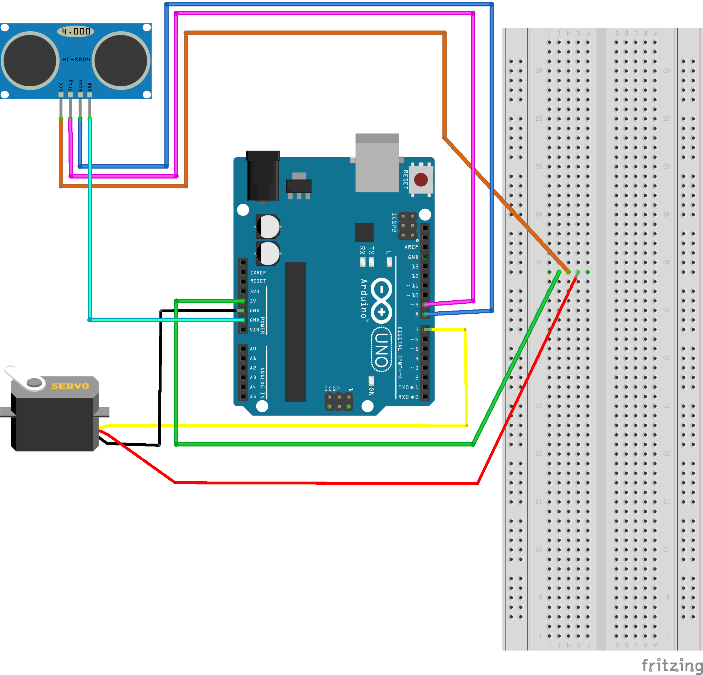
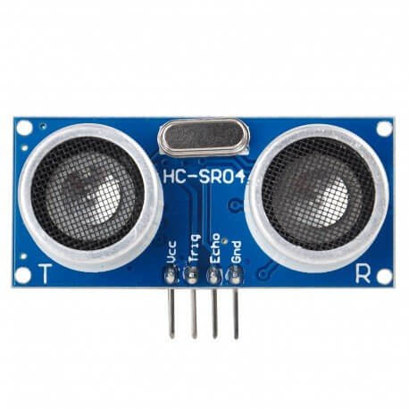
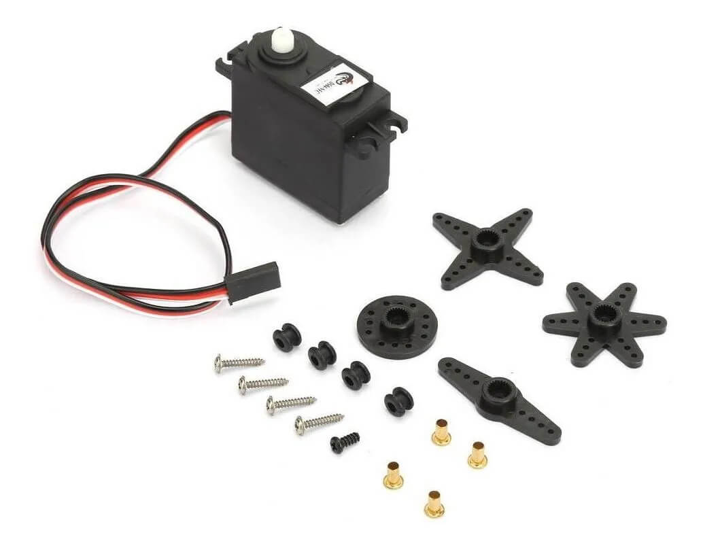
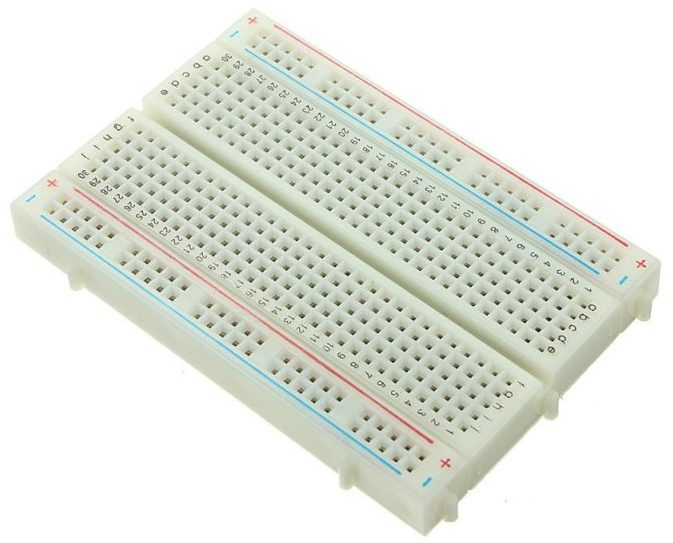

2 Descripción del proyecto
2.1 Análisis de requisitos
Que funcione perfectamente Que quede bien presentado Que la página esté terminada
2.1.1 Requisitos funcionales
Código entendible, conexiones correctamente conectadas
2.1.2 Requisitos no funcionales
Que sea fácil de utilizar Que la cuerda aguante con el servomotor Que tenga buena durabilidad
2.1.3 Previsión de tareas de investigación
- Comprender cómo funciona Arduino
- Comprender cómo funciona un servomotor
- Comprender cómo funciona el sensor
- Comprender el código de Arduino
2.2 Tecnologías
2.2.1 Comparativa de las tecnologías valoradas
2.2.2 Tecnologías escogidas
2.3 Estructura del proyecto
El sensor tiene diferentes conectores que hay que conectar a arduino para que funcione y se pueda modificar con el código. El primero conector que vemos más a la izquierda de color naranja se llama vcc que es el que recibe electricidad para que funcione el sensor. Este conector va conectado al de 5V de la placa para que le de energía. El conector trig de color rosa va conectado al pin donde enviara un pulso ultrasonico. El conector echo de color azul se encarga de recibir el pulsa ultrasonico que envia el trigger y va conectado al pin 8. Por último tenemos el conector GND de color turquesa es la toma de tierra. Es el pin que nos suministra la tensión para el rango máximo de los puertos analógicos, normalmente 5V y va conectado al conector GND de la placa.
El servomotor es parecido al sensor tiene el mismo tipo de conectores. El primer conector del servomotor se llama señal y es la entrada, ya sea analógica o digital, que representa el comando de posición final para el eje va conectado al pin 7. El conector vcc del servomotor es igual que el del sensor es el conector de alimentación y va conectado a la protoboard junto con el sensor para que los dos reciban 5V y tengan suficiente energía para funcionar. Y por último el conector GND igual que el sensor es para conexión a tierra y va conectado al otro GND de la placa. Un conector de la placa que se llama 5V va conectado a la protoboard y el conector vcc del servomotor y sensor van conectados justo detrás del 5V para que los dos reciban energía y funcionen.
2.4 Descripción de los componentes

2.4.1 Componente 1
Sensor HC-SR04
El sensor HC-SR04 es un sensor de distancia de bajo coste que utiliza ultrasonido para determinar la distancia de un objetivo en un rango de 2 a 450 cm. Destaca por su pequeño tamaño, bajo consumo energético, buena precisión y excelente precio. El sensor HC-SR04 es el más utilizado dentro de los sensores de tipo ultrasonidos, principalmente por la cantidad de información y proyectos disponibles en la web. Del mismo modo es el más empleado en proyectos de robótica como robots o como en nuestro caso un jabón automatizado.
2.4.2 Componente 2
Servomotor DS04-NFC
Es un actuador rotativo o lineal capaz de controlar la posición, velocidad o aceleración del eje de forma precisa y con una elevada respuesta dinámica. Este servomotor de rotación continua convierte a un Servo estándar RC de pulsos PWM en un Servo de velocidad de rotación continua (360 °), con un Torque de 5.5Kg / cm.
2.4.3 Componente 3
Arduino UNO placa
Un Arduino es una placa que cuenta con todos los elementos necesarios para conectar periféricos a las entradas y salidas del microcontrolador. Se trata de una placa impresa con todos los componentes necesarios para el funcionamiento del micro y su comunicación con un ordenador a través de comunicación serial. Es una placa con código abierto creada por Arduino.

2.4.4 Componente 4
Protoboard
Es un tablero con orificios que se encuentran conectados eléctricamente entre sí de manera interna, habitualmente siguiendo patrones de líneas, en el cual se pueden insertar componentes electrónicos y cables para el armado y prototipado de circuitos electrónicos y sistemas similares y que hemos utilizado para conectar sensor y servomotor en este proyecto
